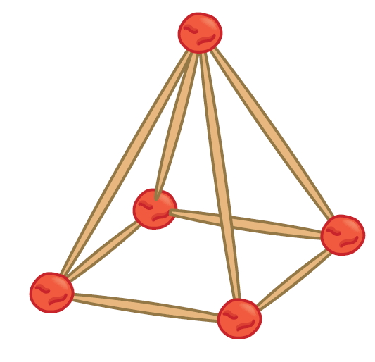

- 문제
- 계획
- 실행
- 반성
-
구하려는 것은 무엇인가요?
주어진 재료로 만들 수 있는 각기둥과 각뿔입니다.문제에서 주어진 정보를 모두 써 보세요.
예고무찰흙은 12개 있습니다.
예긴 막대는 6개, 짧은 막대는 12개 있습니다.
-
문제를 해결할 수 있는 방법을 말해 보세요.
-
-
주어진 재료로 만들 수 있는 각기둥과 각뿔을 찾아보세요.
예고무찰흙 5개와 짧은 막대 4개, 긴 막대 4개를 이용해서 사각뿔을 만들 수 있습니다.
 -
주어진 재료로 만들 수 있는 각기둥과 각뿔을 찾아보세요.
예만들 수 있는 각기둥은
삼각기둥: 고무찰흙 6개, 막대 9개
사각기둥: 고무찰흙 8개, 막대 12개
오각기둥: 고무찰흙 10개, 막대 15개
육각기둥: 고무찰흙 12개, 막대 18개입니다.예만들 수 있는 각뿔은
삼각뿔: 고무찰흙 4개, 막대 6개
사각뿔: 고무찰흙 5개, 막대 8개
오각뿔: 고무찰흙 6개, 막대 10개
육각뿔: 고무찰흙 7개, 막대 12개입니다. -
내가 찾은 각기둥과 각뿔을 친구들과 비교해 보세요.
예고무찰흙 6개와 짧은 막대 6개, 긴 막대 3개를 이용하여 삼각 기둥을 찾아 만들었습니다.
친구는 사각기둥을 찾아 만들었는데 저보다 고무찰흙 2개, 짧은 막대 2개, 긴 막대 1개를 더 사용했습니다.고무찰흙을 꼭짓점으로, 막대를 모서리로 생각할 때 꼭짓점, 모서리, 면의 수를 말해 보세요.
예삼각뿔을 만들었을 때 고무찰흙과 막대의 수를 살펴보면 꼭짓점 4개, 모서리 6개, 면 4개입니다.
-
-
연수는 팔각기둥을 만들려고 합니다. 팔각기둥을 만들기 위해 준비해야 할 고무찰흙과 막대의 수를 구해 보세요.
예팔각기둥은 꼭짓점의 수가 16이고 모서리의 수가 24입니다. 따라서 준비해야 할 고무찰흙과 막대의 수는 각각 16, 24입니다.